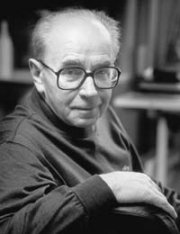
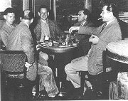
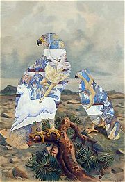
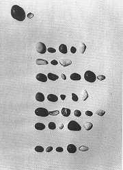
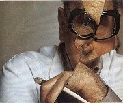
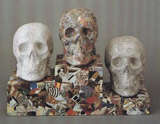
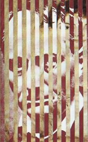
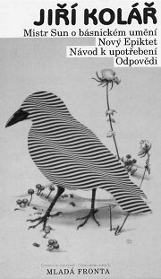

OBSAH
Èeská literatura 20. století
Literatura v dobì okupace
Skupina 42
Èeská literatura po roce 1945
Experimentální poezie
Exilová literatura
|
JIØÍ KOLÁØ
* 24. 9. 1914 Protivín
+ 12. 8. 2002 Praha
Jiøí Koláø byl vùdèí osobností Skupiny 42, která vznikla v dobì okupace, po roce 1948 nemohl publikovat (kvùli básnické sbírce Prométheova játra strávil nìkolik mìsícù ve vìzení), v 60. letech se vìnoval experimentální poezii, pozdìji básnickou tvorbu opustil a plnì se zamìøil na vıtvarné umìní. Od roku 1981 �il v Paøí�i, odkud finanènì podporoval èeské umìlce. Ve svìtì se proslavil pøedevším svımi kolá�emi.
|

|
Koláø a 40. léta
|
Jiøí Koláø a Skupina 42
Jiøího Koláøe uvedl do literatury František Halas, kterı rád podporoval zaèínající autory. S jeho pomocí vyšla v roce 1941 Koláøova prvotina s názvem Køestnı list.
O rok pozdìji u� byl Koláø èlenem vıznamného umìleckého seskupení – Skupiny 42, jejím� programem bylo zmapovat mìstskou periferii. Básníci z této skupiny pou�ívali nespisovné vırazy a psali volnım veršem. Koláøovy básnì z tohoto období pøipomínají spíše záznamy nestranného pozorovatele, a aby byla zdùraznìna jejich dokumentárnost, bıvají opatøeny pøesnım datem vzniku. Vyvrcholením tohoto tvùrèího postupu jsou sbírky Dny v roce (1948) a Roky v dnech, které vznikly na základì autorova pøedsevzetí, �e ka�dı den napíše jednu báseò a jeden prozaickı text. Obì sbírky zaèaly vznikat a� po válce (v roce 1946), zatímco první ještì mohla vyjít, sazba Rokù v dnech byla rozmetána a básník nemohl a� do roku 1957, kdy vyšla jeho sbírka Mistr Sun o básnickém umìní, publikovat.
|
Nástup komunismu a rok 1948 znamenal faktickı zánik mnoha umìleckıch skupin, také Skupina 42 zanikla, proto�e Ivan Blatnı emigroval, Jiøí Koláø nemohl publikovat a Josef Kainar zaèal psát budovatelské básnì...
|
Koláø a 50. léta

Velmi povìstnı byl stùl Jiøího Koláøe v pra�ské kavárnì Slávia, kde se setkával se svımi kolegy. Pozdìji ho zde navštìvovali také mladí adepti umìní, kterım se Koláø ochotnì vìnoval, podobnì jako František Halas jemu. Na fotografii jsou (zleva): Kamil Lhoták se synem, Josef Èermák, Josef Hiršal a Jiøí Koláø.
|
Prométheova játra
V této básnické sbírce Koláø pokraèuje v metodì, kterou vymyslel u� døíve – jako „oèitı svìdek“ soustavnì zapisuje dobové události. Místo názvù opìt nacházíme pouze data vzniku. Kromì tìchto básní-záznamù obsahuje sbírka další básnì psané volnım veršem, prozaické texty a zajímavé experimenty, ve kterıch Koláø kombinuje dvì rùzná díla. Tento postup uplatnil hned v první èásti sbírky – báseò Skuteèná událost byla inspirována dvìma texty (dìsivou prózou Ladislava Klímy Skuteèná událost zbìhnuvší se v Postmortalii a povídkou �ofie Na³kowské U trati), jak sám autor v doslovu pøiznává.
Všichni pøemıšlejí o lidstvu a nikdo nemyslí na èlovìka
všichni mluví o knihách a nikdo neumí øíci poctivé slovo
všichni volají po sbratøení národù a nikdo neumí podat ruku
všichni budují a nikdo nevidí postavené
všichni si pøejí vzkøísit svìt a nikdo nevidí �ivého
všichni bojují za práva svıch otcù a nikdo nevidí syny v otroctví
všichni horují pro mír a ka�dı zapomnìl co je to zemøít
pøirozenou smrtí
všichni jsou odhodlaní krvácet za lepší lidstvo a nikdo neví co je sám
všichni mluví ó lásce a �ádnı ji� neví co znamenají slova:
Dobrı den nebo Dobrou noc
všichni pracují na nejvìtším díle dìjin a nikdo neví co dìlá
všichni kráèejí vpøed k záøící metì budoucnosti a nikdo neví kudy jde
všichni jsou ochotni padnout za vlast za kulturu za slávu svıch velikıch mrtvıch a nikdo neví co je obyèejnı stud
Jásající høbitov, 1. kvìten - 20. kvìten 1950. Sobota
|
|
Osud básnické sbírky Prométheova játra byl pro období totality velmi pøíznaènı. Koláø ji napsal v roce 1950, ale o jejím uveøejnìní nemohla bıt ani øeè, proto�e øada básní pøímo nebo nepøímo napadala komunistickı re�im. Rukopis sbírky tedy koloval pouze mezi jeho známımi. Pøi domovní prohlídce u kritika Václava Èerného objevila Koláøovy texty státní bezpeènost a básník strávil v roce 1953 devìt mìsícù ve vyšetøovací vazbì a nakonec byl na stejné období odsouzen. Byl to jedinı pøípad, kdy byl v Èechách odsouzen spisovatel za nevydané texty! V roce 1969 mìla sbírka koneènì vyjít, ale jejímu vytištìní zabránila nastupující normalizace. Nakonec vyšla v roce 1985 v exilovém nakladatelství man�elù Škvoreckıch v Torontu a v roce 1990 koneènì i v Èechách.
|
Koláø a 60. léta

Poznáš, kterı slavnı malíø je autorem obrazu „uvnitø ptákù“ – kolá�e Jiøího Koláøe z cyklu Ornitologie moderního umìní? |
Básnì ticha
V 60. letech se Koláø zaèal zabıvat experimentální poezií, pøedevším vizuální. Ve svıch textech z této doby vyu�ívá všechny mo�nosti psacího stroje (škrtá, �uká písmenka pøes sebe, vytváøí z nich nejrùznìjší obrazce atd.). Tento postupnı pøechod od obyèejného textu a� k vıtvarnému umìní skvìle dokládá jeho kniha Básnì ticha. Napø. v básni Calder Koláø sestavil z jednotlivıch písmen jména tohoto malíøe jeho dílo:
 Pokud nevíš, kdo byl Calder, zkus o nìm najít co nejvíce informací, pøedevším reprodukcí jeho dìl.
Pokud nevíš, kdo byl Calder, zkus o nìm najít co nejvíce informací, pøedevším reprodukcí jeho dìl.
Další básnì ze sbírky Básnì ticha jsou slo�eny vıhradnì z èíslic, z karet, ze zmuchlaného notového papíru, provázkù atd. Koláø si také pøedstavoval, jakou báseò by napsal slepec, analfabet, cvok... Pro tyto texty vymyslel originální názvy analfabetogram a cvokogram. Závìreèné stránky knihy u� vyplòují autorovy kolá�e a fotografie prostorovıch objektù polepenıch potištìnım papírem.
|
BÁSEÒ TICHA
Sesbírej
hromádku oblázkù
a sestav z nich
kdekoliv
i s nadpisem
oblázek za oblázkem
jako slovo za slovem
øádku za øádkou
jako verš za veršem
pohlednou báseò
Návod k upotøebení (1969)

Poznáš, jak vznikla tato báseò? Proè se jmenuje právì Báseò ticha?
|

Jiøí Koláø: Autoportrét, 1979
Kolá�e
Koláø zaèal s tvorbou kolá�í u� ve 30. létech (první vıstavu mìl v Burianovì Déèku v roce 1937), ale jeho vıtvarná tvorba pak ustoupila tvorbì básnické. V 60. letech se ke kolá�ím vrací a soustavnì se jim vìnuje a� do konce �ivota. V duchu experimentální tvorby vnáší nové postupy i do vıtvarného umìní. Vymıšlí prolá�e (prou�ky reprodukcí sestavované k sobì v rùznıch variacích), muchlá�e (zmuchlané reprodukce) a další nové techniky.
|
Jiøí Koláø vıtvarník
Normalizace pøipomnìla Koláøovi 50. léta, kdy nemohl publikovat. Jeho knihy zmizely z knihoven, èerstvì vytištìná monografie o Koláøovi z pera Miroslava Lamaèe se nedostala do knihkupectví. Navíc Koláø podepsal Chartu 77. Re�im se ho zbavil tím, �e mu dovolil vycestovat na stipendijní pobyt do západního Berlína. Koláø u� se nevrátil a od roku 1981 se usadil v Paøí�i. Jeho �ena Bìla, s ní� se o�enil v roce 1949 a která byla také vıtvarnice, zùstala sama v Èeskoslovensku. Man�el byl v nepøítomnosti odsouzen na jeden rok a byl mu zabaven majetek. Koláø se postupnì stává vìhlasnım umìlcem, ale na Èechy nezapomnìl – z Francie posílal peníze umìlcùm, kteøí doma nemohli publikovat (napø. Skácelovi), a po roce 1989 se vrátil domù, kde zaèaly vycházet jeho døíve zakázané knihy a Koláøovu vıtvarnou tvorbu pøedstavily rozsáhlé vıstavy.

Jiøí Koláø: Stupnì vítìzù, 1973.
|

Tato kolá� je pro Koláøovu tvorbu typická. Vznikla kombinací dvou umìleckıch dìl. Zkus zjistit kterıch. Mo�ná ti napoví název: Rozhovor pan B. s panem R. v nebi (Pocta Baudelairovi), 1973.
|
Básnické sbírky
|
Dílo (rok a místo vydání, charakteristika)
V souèasné dobì vycházejí sebrané spisy Jiøího Koláøe, vıstavní katalogy a vıpravné vıtvarné publikace mapující jeho tvorbu.
Køestnı list (1941)
Sedm kantát (1945)
Limb a jiné básnì (1945)
Ódy a variace (1946)
Dny v roce (1948)
Mistr Sun o básnickém umìní (1957)
Básnì ticha (1965, èást ze stejnojmenné sbírky)
Evidentní poezie (1965)
L'enseigne de Gersaint (1965, paralelnì i angl. a nìm.)
Vršovickı Ezop (1966)
Novı Epiktet (1968)
Návod k upotøebení (1969)
Oèitı svìdek (Mnichov 1983)
Prométheova játra (Toronto 1985, Praha 1991)
Roky v dnech (1992)
|

|
Pøeklady a pøevyprávìní
|
Ezop: Bajky (1957, adaptace staroèeskıch textù)
Kocourkov (1959, volné zpracování textù J. F. von Schönberga, s J. Hiršalem)
O podivuhodném �ivotì mudrce Ezopa, kterı rozumìl øeèi ptákù, zvíøat, hmyzu, rostlin i vìcí (1960, volné zpracování staroèeskıch textù. s J. Hiršalem)
Enšpígl (1962, volné zpracování starıch nìmeckıch textù, s J. Hiršalem)
Baron Prášil (1965, podle G. A. Bürgera, s J. Hiršalem)
|
|
Divadelní hry
|
Mor v Athénách (1965)
Unser täglich Brot (Vídeò 1966, pøel. K. B. Schäufellen, èesky Praha 1991 s názvem Chléb náš vezdejší)
|
|
Internetové stránky
Jiøí Koláø
Jiøí Koláø: Básnì ticha
Tvorba Jiøího Koláøe
|
Doporuèená èetba
Chalupeckı, Jindøich: Na hranicích umìní, Prostor a Arkıø, Praha 90
Koláø, Jiøí, vıtvarnou publikaci sestavila Milada Motlová, Odeon, Praha 93
Koláø, Jiøí: Básnì ticha, Èeskı spisovatel, Praha 94
Koláø, Jiøí: Mistr Sun o básnickém umìní, Novı Epiktet, Návod k upotøebení, Odpovìdi, Èeskı spisovatel, Mladá fronta a Odeon, Praha 95
Koláø, Jiøí: Prométheova játra, Èeskoslovenskı spisovatel, Praha 90
|
Pøiprav si referát o nìkteré z uvedenıch knih nebo internetovıch stránek.
|
|